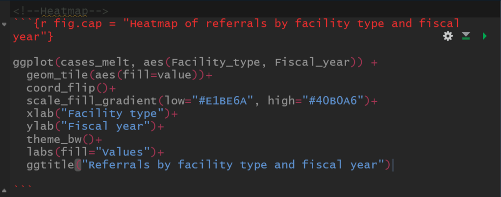
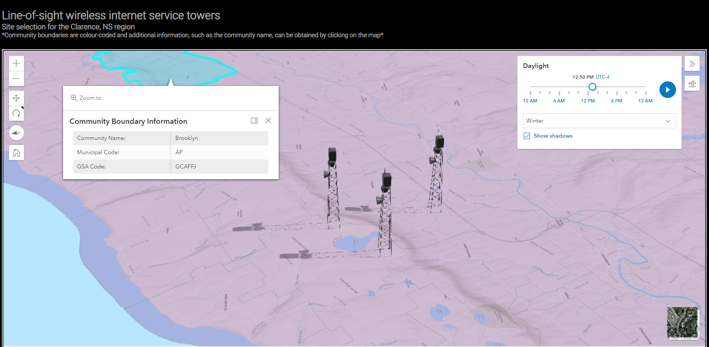

Academic Portfolio

ANALYSIS AND MANIPULATION OF SATELITTE IMAGERY
This project used Landsat 8 imagery of the McKay Creek, BC wildfire and applied standard and custom enhancements to improve visibility in PCI Catalyst

DATA ANALYSIS WITH R IN RSTUDIO (RMARKDOWN)
This project analyzed data regarding protections for persons in care in Nova Scotia using R with a heavy emphasis on the ggplot2 package

DESIGN & CREATION OF WEBSITES WITH WEB MAPS
This project used HTML, CSS, JavaScript, and the ArcGIS API for JavaScript to create a website with a 3D web map for a line of sight analysis